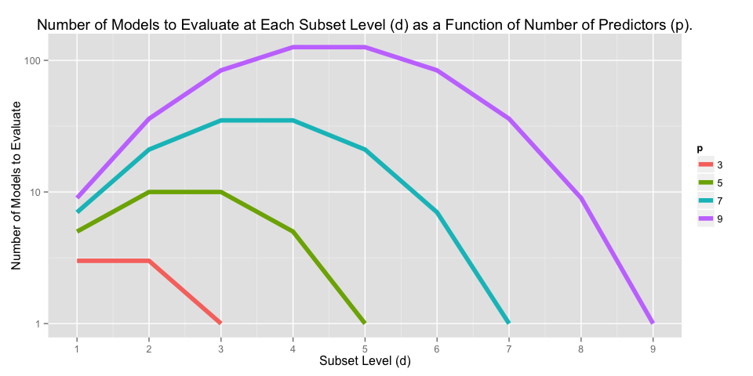

Vignette: Branch and Bound
library(knitr)
library(ggplot2)
library(xtable)
library(gridExtra)
library(pander)
opts_knit$set(fig.width = 10,
xtable.type = 'html',
warning = FALSE,
cache = TRUE,
dev = 'png')
options(xtable.comment = FALSE)
panderOptions('table.split.table', Inf)Overview
The purpose of this short note is to introduce the branch and bound method for exhaustive subsetting of predictor variables in multivariate linear regression. Those familiar with integer programming may also be familiar with branch and bound techniques, as they are widely used. This note will not explore low-level algorithmic details (which vary widely) but instead convey the basic theory and general results of the application of branch and bound techniques.
The Subsetting Problem
The \(R^2\) Ratchet
Here we are concerned with estimating the mean of the vector \(y = X\beta + \epsilon\) where \(X\) is a \(n\) by \(p\) design matrix. In general, increasing \(p\) (the number of predictors) relative to \(n\) (the number of observations) will reduce the residual sum of square errors, \(RSS = \sum_i^n (y_i - \hat{y})\) and increase the coefficient of determination \(R^2\). In fact, RSS will never increase and the \(R^2\) never decrease with an additional predictor \(X_{p+1}\), regardless of wheter or not the new predictor \(X_{p+1}\) is a cuasal driver of \(y\) or just random noise. See the Vignette on the \(R^2\) ratchet for more details.
Best Subsets
One method to account for the effects of the number of predictors (\(p\)) on the in-set predictive capability is simply to enumerate the \(k\) best models for each subset of \(d\) predictors where \(d \le p\) so the trade-offs can be assessed directly. However, as the number of models to evaluate grows quickly with \(p\), the upper bound on \(d\). Specifically, at each level \(d\) there are \(\tbinom pd\) models.
library(ggplot2)
#p == 5
p3 <- rep("3", 9)
x3 <- c(1:3, rep(NA, 6))
y3 <- c(choose(3, x3))
#p == 5
p5 <- rep("5", 9)
x5 <- c(1:5, NA, NA, NA, NA)
y5 <- c(choose(5, x5))
#p == 7
p7 <- rep("7", 9)
x7 <- c(1:7, NA, NA)
y7 <- c(choose(7, x7))
# p == 9
p9 <- rep("9", 9)
x9 <- 1:9
y9 <- choose(9, x9)
df <- data.frame(x = c(x3, x5, x7, x9),
y = c(y3, y5, y7, y9),
p = c(p3, p5, p7, p9))
p <- ggplot(df, aes(x = x, y = y, color = p)) +
geom_line(lwd = 2) + scale_y_log10() +
scale_x_continuous(breaks = round(seq(1, 9, by = 1),0)) +
ggtitle("Number of Models to Evaluate at Each Subset Level (d) as a Function of Predictors (p).") +
ylab("Number of Models to Evaluate") +
xlab("Subset Level (d)")
p## Warning: Removed 12 rows containing missing values (geom_path).
Branch and Bound
Furnival and Wilson,
Step-wise Example
Step 1

Step 2

Step 3

Step 4

Step 5